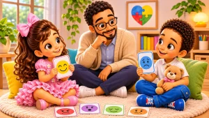
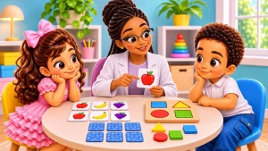

Fonoaudiologia
Comunicação, linguagem, fala, voz e alimentação, em todas as fases da vida.
Atendimento terapêutico com olhar humanizado para crianças, adolescentes, adultos e suas famílias.
Sobre a AMAR
A Clínica Multidisciplinar Espaço Terapêutico AMAR nasceu para ser um lugar onde cada pessoa é vista por inteiro. Reunimos profissionais de diferentes áreas para oferecer terapias e intervenções personalizadas, sempre com foco no desenvolvimento e na qualidade de vida.
Atendemos crianças, adolescentes e adultos, e acreditamos que a família é parte essencial do caminho: por isso, a comunicação é clara, próxima e acolhedora em cada etapa.
Por que escolher a AMAR
Especialidades
Profissionais de diversas áreas trabalhando de forma integrada para um cuidado completo.
Comunicação, linguagem, fala, voz e alimentação, em todas as fases da vida.
Autonomia nas atividades do dia a dia, integração sensorial e coordenação.

Cuidado emocional e comportamental com escuta ética e acolhedora.
Apoio às dificuldades de aprendizagem, atenção e organização dos estudos.
Movimento, equilíbrio, esquema corporal e expressão por meio do corpo.
Desenvolvimento motor, força, postura e reabilitação funcional.
A música como ferramenta de expressão, interação e regulação emocional.

Investigação detalhada de atenção, memória e funções cognitivas.
Processos criativos para expressar sentimentos e fortalecer o bem-estar.
Treino de convivência, empatia e comunicação com colegas e família.
Orientação nutricional para apoiar saúde, rotina e bem-estar em cada fase da vida.
Acompanhamento para ampliar experiências alimentares com acolhimento e orientação.
Terapias e Atividades Complementares
Atividades complementares ao atendimento terapêutico, cadastradas e atualizadas pela equipe da AMAR.
Intervenção baseada em princípios da Análise do Comportamento Aplicada (ABA). Disponibilidade, profissional responsável e condições de atendimento serão confirmados pela equipe da clínica.
Atividade física complementar com foco em disciplina, coordenação motora e convivência em grupo. Disponibilidade, horários e condições serão confirmados pela equipe da clínica.
Encontros com propostas pedagógicas voltadas ao desenvolvimento e à aprendizagem. Disponibilidade, temas e condições serão confirmados pela equipe da clínica.
Programação de atividades especiais durante o período de férias escolares. Disponibilidade e condições serão confirmadas pela equipe da clínica.
Acompanhamento no período complementar ao horário escolar. Em breve.
Como funciona
No atendimento particular, a reserva do horário é feita mediante pagamento. Depois, é só seguir os passos:
O horário é garantido com a confirmação do pagamento.
Enviamos orientações e coletamos os dados iniciais.
Uma conversa para conhecer a história e as necessidades.
O plano terapêutico começa, no ritmo de cada pessoa.
Ilustração representativa do ambiente — fotos reais serão adicionadas quando disponibilizadas pela clínica.
Ambiente terapêutico
Buscamos oferecer um ambiente calmo, seguro e estimulante, onde crianças, adolescentes e adultos se sintam à vontade para se expressar durante o atendimento.
O acolhimento começa na chegada: equipe atenta, comunicação clara com a família e um espaço preparado para o cuidado terapêutico em cada etapa.
Convênios e particular
Atendemos no formato particular. A relação com convênios está em processo de confirmação junto aos planos de saúde — consulte pelo WhatsApp a situação mais atual antes de agendar.
Avaliações no Google
AVALIE A AMAR NO GOOGLE
Ajude a Clínica AMAR a continuar transformando vidas. Sua avaliação fortalece nosso trabalho e ajuda outras famílias a conhecerem nosso espaço.
Clique no botão para avaliar nossa clínica.
Avaliar agoraA nota média e a quantidade de avaliações serão exibidas após confirmação na fonte oficial.
Contato
Fale com a nossa equipe e dê o primeiro passo com tranquilidade.
Com agendamento
Confirme os horários disponíveis pelo WhatsApp.